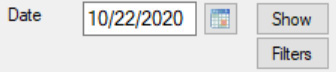

The Contact Visit List contains the visits for the selected filters. Visits can be added, edited and deleted from this list.
The Visit List Filter controls are located to the right of the Toolbar Buttons.

The list filters determine which records will appear in the list.
Date FilterWhen the Visit List form is first displayed, the Date Filter contains today's date and the Visit List is filled with the visits using the Date Filter as the Register Date.
If the Date Filter is manually changed or changed from the Calendar Dialog, then the "Show" button must be selected before the list is refreshed using the Date Filter value.
Calendar ButtonThe Calendar Button displays the Calendar Dialog. The Calendar Dialog is used to select a date for the Date Filter. The date is copied back to the Date Filter when the user selects a date.
Show ButtonThe Show Button applies the Date Filter and other filters selected from the Visit Filter Detail Dialog.
The Show Button retrieves the visits that match the filter values. If the filter values are empty, then all visits are retrieved.
Filters ButtonThe Filters Button displays the Visit Filter Detail dialog. The Visit Filter Detail Dialog allows the user to add additional filter values.
Clear Filters ButtonThe Clear Filters Button clears all the filters from the Visit Filter Detail Dialog.
The Contact Visit List has a toolbar above it which provides one touch access to the most common list actions.
NewThe 'New' toolbar button displays the Contact Visit Detail dialog to allow for the creation of a new visit entry.
EditThe 'Edit' toolbar button displays the Contact Visit Detail dialog to allow for editing the selected list item.
EnterThe 'Enter' toolbar button sets the Visit Enter Date and Time to the current date and time. This is the time the Contact actually entered the facility.
ExitThe 'Exit' toolbar button sets the Visit Exit Date and Time to the current date and time. This is the time the Contact actually exited the facility.
The Context Menu can be displayed by clicking the right mouse button on the desired list item. The list item is selected and the menu items apply to the selected item or list.
If you are using a Tablet or a laptop in Tablet Mode, touch the desired list item and leave your finger on the item for a short while until a box is displayed. This shows that the touch is considered a right mouse click. Remove your finger and the context menu will be displayed.
NewThe 'New' menu item displays the Contact Visit Detail dialog to allow for the creation of a new visit entry.
EditThe 'Edit' menu item displays the Contact Visit Detail dialog to allow for editing the selected list item.
EnterThe 'Enter' menu item sets the Visit Enter Date and Time to the current date and time. This is the time the Contact actually entered the facility.
ExitThe 'Exit' menu item sets the Visit Exit Date and Time to the current date and time. This is the time the Contact actually exited the facility.
DeleteThe 'Delete' menu item deletes the selected list item.
RefreshThe 'Refresh' menu item reloads the list items from the database.
Export TextThe 'Export Text' menu item creates a tab delimited text file with the file name 'ExportFiles\CVVisit.doc'. It attempts to display the data with the application that is associated with the '.doc' extension.
Export CSVThe 'Export CSV' menu item creates a comma delimited text file with the file name 'ExportFiles\CVVisit.csv'. It attempts to display the data with the application that is associated with the '.csv' extension.
CloseThe 'Close' menu item closes the window and exits the application.
FacilityThe 'Facility' menu item displays the Facility List to allow for maintaining the Facility data.
HelpThe 'Help' menu item displays the help page for the current list.